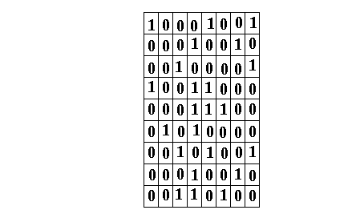
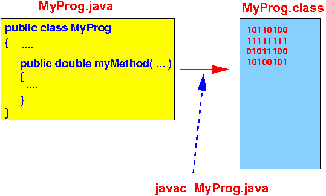

- Recall that
the computer memory contains
a bunch of
binary digits (= bits):
 - Things that are
stored in
memory:
- Some of the
bytes of the memory contains
instruction codes of the
computer program
- We call these binary numbers: machine instruction codes
- Some of the bytes of the memory are used store program variables defined in the computer program
- Some of the
bytes of the memory contains
instruction codes of the
computer program
- An important fact that
you must always remember
when you take CS255 is:
- Everything stored
inside the computer (memory)
are
represented by:
- binary numbers (because the computer memory can only record binary digits, or bits !!!)
- Everything stored
inside the computer (memory)
are
represented by:
- In CS170/CS171,
you write program in
a high level programming language
-- such as Java
- A programmer (= you) will
typically writes
a (Java) program such as:
public class MyProg { public int x; public double myMethod( ... ) { ... } .... }Fact:
- The computer
cannot execute
statements in a
high level programming language !!!
In other words:
- The computer cannot execute the statements in the (Java) program
- The computer
cannot execute
statements in a
high level programming language !!!
- What your professor in CS170/CS171 tell
you to do after you have
written your Java program is:
- Compile your program using a "compiler" before you can run it
- A compiler is
a "language translator":
- A compiler (e.g.: javac)
will
translate
the statements (commands)
written in a
high level programming language into
a sequence of
machine instructions that
achieves the effect (= result)
of the statements.
E.g.: when you run javac on a Java source program, it will produce an output file (with the extension .class) that contains the machine instructions:

- A compiler (e.g.: javac)
will
translate
the statements (commands)
written in a
high level programming language into
a sequence of
machine instructions that
achieves the effect (= result)
of the statements.
- The Java compiler produces
the machine instructions using
one single command
(i.e.: javac)
In general, the porgram translation is a two (2) step process:
- In the first step,
the compiler
translates the
high level programming constructs into
an equivalent program written in an
assembler language
This program is called an assembler program
- The assembler language is a low level programming language that consists of nmemonics used to represent binary machine instruction codes (so instead of remembering binary numbers such as 10101010101010101010, you can write its nmemonics add R0, R1, R2)
- In step 2, a program called the assembler, translates the resulting assembler program into binary machine instruction codes
This 2 steps process is the result of the historical development:
- The first generation programmers
(pioneers) write computer programs
as binary machine instruction codes !!!
This process was very error prone !!
Programming in binary machine instruction code was called: the 1st generate programming language
- Later, we developed (= wrote) an
assembler to
allow programmers to
write computer programs in a low level
assembler programming language
consisting of
nmemonic codes
- There is a one-to-one correspondence
between assembler nmemonics and
binary machine instruction codes
E.g.:
add R0,R1,R2 ⟷ 1010101010101010101 sub R0,R1,R2 ⟷ 1110101010101010101
Now programmers can write nmemonics (like add R0,R1,R2) instead of binary machine instruction codes
- Because there is
one-to-one correspondence between
assembler nmemonics and
binary machine instruction codes,
assembler porgrams are
highly machine dependent !!!
An assembler program written for one type of computer A can not run on another type of computer B
The assembler langauge is called the 2nd generation programming language and have the program translated by the assembler
- There is a one-to-one correspondence
between assembler nmemonics and
binary machine instruction codes
- Finally (in 1959), we developed the
first high level programming language
(called Fortran (Formula Translator))
and written the first (Fortran) compiler
The compiler translates statements in a high level programming language into an equivalent program in assembler language
With the introduction of high level programming language, the job of programming a computer has been made simple enough to be accessible by a wide group of people.
Also:
- The standardization of
high level programming languae
also make it possible to
"port" a program written in a
high level programming language to
different types of
computers.
You must re-compile the source code on each type of computer before running the program !!!
- The standardization of
high level programming languae
also make it possible to
"port" a program written in a
high level programming language to
different types of
computers.
I have written about the evolution of programming languages before and kept the webpage here - you can read it for further details: click here
- In the first step,
the compiler
translates the
high level programming constructs into
an equivalent program written in an
assembler language
- I don't have a Fortran compiler
handy, so I will
show you the general
program translatio process in
the C programming language:
- A C program
(C is very similar to Java) is
translated as follows:

First, the C compiler translates the C source program into an equivalent program written in an assembler (nemonic) programming language
Then an assembler translate the assembler code (program) into (binary) machine code (instruction)
I will illustrate this process in class using the command below
- A C program
(C is very similar to Java) is
translated as follows:
- Example Program:

- Check out the following C program:
/home/cs255000/demo/c-asm/main.c
int x; int main( ) { x = x + 44; }
- Compile the
main.c program
with this command:
/home/cs255001/bin/cc255 -S main.cThe cc255 (C compiler for 255) will produce the assembler program main.s:
... ldr r3, .L3 // This is the variable x !!! ldr r3, [r3] add r3, r3, #44 // This is the add operation for x+44 !! ldr r2, .L3 str r3, [r2] mov r3, #0 mov r0, r3 ... .L3: .word x // .L3 is the variable xThere are lots of stuff that you don't need to understand; but the gist is:
- This example shows you that the compiler translates the high level (C) program statements into assembler instructions that performs the same operation (add !) specified by the high level program statements
So Java/C is an artificial language for the computer.
The language that the computer uses is: the assembler langange !!!
Note:
- Every CPU (chip) has its own assembler language !!!
- You can compile
the assembler program
main.s with:
/home/cs255001/bin/cc255 -c main.sThe C compiler will invoke the assembler to produce the machine (object) program code main.o
You can view the content of the (binary) object file using this command:
/home/cs255001/bin/dump255 main.oYou will see this output:
Disassembly of section .text: 00000000
: 0: e52db004 push {fp} ; (str fp, [sp, #-4]!) 4: e28db000 add fp, sp, #0 8: e59f3020 ldr r3, [pc, #32] ; 30 The list of hexadecimal numbers in red represent the binary machine instruction codes !!!
(The blue text contains the source assembler instructions).
These binary numbers are the computer instructions that are stored in memory when the program is run --- the CPU will fetch them one by one and execute it when the program is run.
I have written on the translation process before and kept the old write up here: click here
- Check out the following C program:
/home/cs255000/demo/c-asm/main.c
- Assembler language:
- Assembler programming language =
a machine dependent
programming language that
is closely associated with
the machine language of
a computer
In fact:
- Each instruction in an assembler language corresponds (uniquely) to one instruction in the machine language !!!
- Assembler programming language =
a machine dependent
programming language that
is closely associated with
the machine language of
a computer
- Assembler program:
- Assembler program = a program that is written in an assembler language
- Most CS professionals
will never write
programs in assembler language !!!
But as a Computer Science professional:
- You must understand
what your program is
doing !!!
(Just like a good mechanic will understand what a car is doing...)
- You must understand
what your program is
doing !!!
- Why we use
assembler language to
understand
computer programs:
- The only way to
understand what
the computer program is
doing is to
understand the
effects of
each computer instruction
- Because the assembler language is closely associated with machine instructions, we will understand what is going on inside the computer when it execute a computer program !!!
- The only way to
understand what
the computer program is
doing is to
understand the
effects of
each computer instruction
- In CS255, we will show you:
- What happens inside the computer when you define variables
- How is an array variable stored/organized inside the computer memory
- How statements
in Java access the
variables in memory
- What happens inside the computer when an assignment statement is executed
- What happens inside the computer when an if-statement is executed
- What happens inside the computer when an while-statement is executed
- What happens inside the computer
when an
for-statement is
executed
- How the computer executes a method call
- What happens inside the computer when a method passes parameters and returns a value
- What happens inside the computer when a parameter is passed by value and passed by reference
- What happens inside the computer
when a
function/method is
recursive
- How to store an array - and how to access the array elements
- How to store an linked list - and what happens inside the computer when you insert/delete/access the linked list elements
What will you gain/learn by taking CS255:
- You will completely understand the internal operations of any computer programming language and language construct
- You will also know the capabilities and limitations of a computer and computer programs